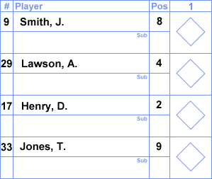

Basics of Scorekeeping

Lineups
The very first section you are going to fill out in your scorebook will be the lineups for both teams. It should look something like this:
You would fill out the name, number, and position for each player in the starting lineup for each team. You can use either the numbers or the abbreviations to accurately mark the postions, they both work. There should be nine players for each team. If you are using DHs, you would also have to include the pitcher's name in the pitchers section.
At-Bats
Now that you have the lineups filled out, as the game progresses you need to fill out each at bat as they happen. You just draw in the lines around the diamond as players progress around the bases and you write down the abbreviation for how they got on base. Here is an example:
In this example, the batter successfully reached first base (as indicated by the drawn line) and he was able to reach it by drawing a walk (as indicated by the written abbreviation, BB, or base on balls).
Base Runners and Scoring Runs
As more batters come to the plate, you continue to draw lines for all the batters/runners still on the bases, which means you will have to go back up to the other players lines. When a runner reaches home plate and scores a run, you mark that by completing the diamond, but also lightly coloring in the diamond. Coloring in the diamonds makes it much easier to spot all the runs that have crossed home plate as you are going back through to find the final score of the game.
This was a very basic run through of how to score a baseball game. By just doing this basic scoring, it's very easy to teach younger kids who want to score, but might not understand the full scoring system. If you want to take a look at some more advanced scoring, click on the 'Advanced Scoring Techniques' in the navigation.
All images on this page are from http://baseballscorecard.com/